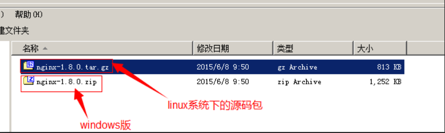
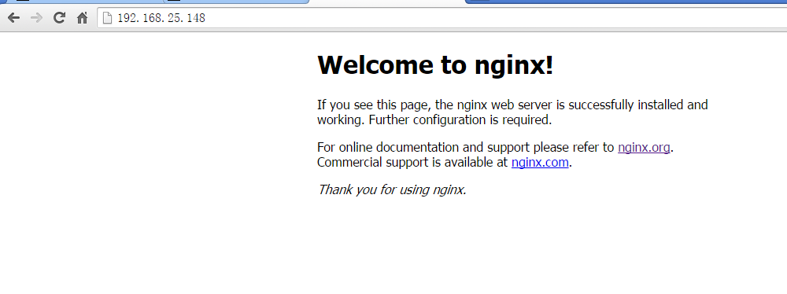
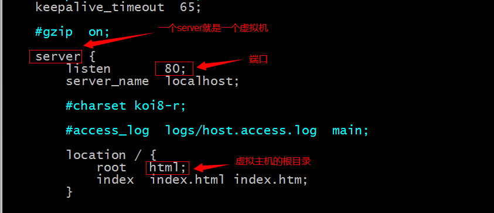
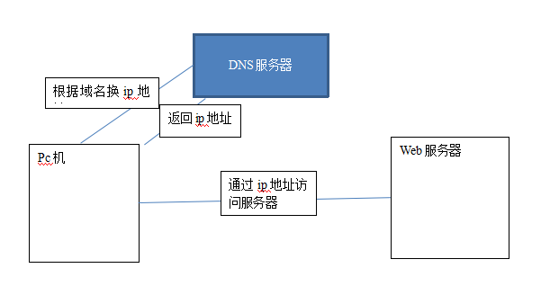
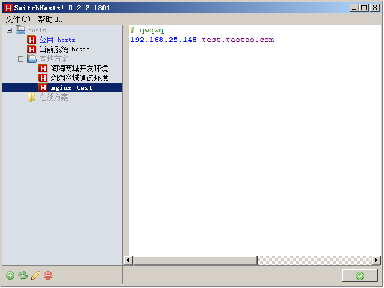

是一个使用c语言开发的高性能的http服务器及反向代理服务器。
Nginx是一款高性能的http 服务器/反向代理服务器及电子邮件（IMAP/POP3）代理服务器。由俄罗斯的程序设计师Igor Sysoev所开发，官方测试nginx能够支支撑5万并发链接，并且cpu、内存等资源消耗却非常低，运行非常稳定。
1、http服务器。Nginx是一个http服务可以独立提供http服务。可以做网页静态服务器。
2、虚拟主机。可以实现在一台服务器虚拟出多个网站。例如个人网站使用的虚拟主机。
3、反向代理，负载均衡。当网站的访问量达到一定程度后，单台服务器不能满足用户的请求时，需要用多台服务器集群可以使用nginx做反向代理。并且多台服务器可以平均分担负载，不会因为某台服务器负载高宕机而某台服务器闲置的情况。
Nginx一般推荐安装到linux系统，而且要安装c语言的编译环境gcc。
进入http://nginx.org/en/download.html 下载nginx1.8.0版本（当前最新稳定版本）。

nginx是C语言开发，建议在linux上运行，本教程使用Centos6.5作为安装环境。
1) 安装nginx需要先将官网下载的源码进行编译，编译依赖gcc环境，如果没有gcc环境，需要安装gcc：
yum install -y gcc gcc-c++
2) PCRE(Perl Compatible Regular Expressions)是一个Perl库，包括 perl 兼容的正则表达式库。nginx的http模块使用pcre来解析正则表达式，所以需要在linux上安装pcre库。
yum install -y pcre pcre-devel注：pcre-devel是使用pcre开发的一个二次开发库。nginx也需要此库。
3) zlib库提供了很多种压缩和解压缩的方式，nginx使用zlib对http包的内容进行gzip，所以需要在linux上安装zlib库。
yum install -y zlib zlib-devel
4) OpenSSL 是一个强大的安全套接字层密码库，囊括主要的密码算法、常用的密钥和证书封装管理功能及SSL协议，并提供丰富的应用程序供测试或其它目的使用。
nginx不仅支持http协议，还支持https（即在ssl协议上传输http），所以需要在linux安装openssl库。
yum install -y openssl openssl-devel
第一步：下载nginx，并把nginx的源码上传到linux系统：
wget http://nginx.org/download/nginx-1.8.1.tar.gz
第二步：把压缩包解压缩：
tar -zxvf nginx-1.8.1.tar.gz
第三步：进入nginx目录下，并进行configure。
cd nginx-1.8.0
./configure
第四步：
make
第五步：
make install
或者编译到指定路径下：(推荐)
make install PREFIX=/usr/local/nginx
1、启动：进入nginx的sbin目录下 启动：
cd /usr/local/nginx/sbin
./nginx
打开浏览器访问此机器的 IP，如果浏览器出现 Welcome to nginx! 则表示 Nginx 已经安装并运行成功。

如果访问不到，首先查看防火墙是否关闭。
2、关闭nginx：（3种方法）
可以使用kill命令，但是不推荐使用。
1）
./nginx -s stop
2）查看进程号，杀死进程，不推荐
ps -ef|grep nginx
kill -9 xxx
3）强制停止
pkill -9 nginx
3、刷新配置：
./nginx -s reload
在/usr/local/nginx/conf目录下nginx.conf文件是nginx的配置文件。
vim /usr/local/nginx/conf/nginx.conf

验证配置文件：
/usr/local/nginx/sbin/nginx -t
在nginx.conf文件中添加一个Service节点，修改端口号就可以
|
server { listen 81; server_name localhost;
#charset koi8-r;
#access_log logs/host.access.log main;
location / { root html81; index index.html index.htm; } } |

可以通过修改host文件指定域名的ip地址。
Host文件的位置：C:\Windows\System32\drivers\etc
可以使用工具：

需要修改nginx.conf配置文件。
|
server { listen 80; server_name test3.taotao.com;
#charset koi8-r;
#access_log logs/host.access.log main;
location / { root html-test3; index index.html index.htm; } } |
注意：修改配置后需要重新加载配置文件。/usr/local/nginx/sbin/nginx -s reload